| МодельОдин результат на задачу | Исходный портретС нуля · без изображения-референса | Цитрусовый садПроизводная от портрета · с. 61 | У автомата с батончикамиПроизводная от портрета · с. 43–44 |
|---|---|---|---|
01Nano Banana 2.1Портрет → 2 сценыМодель на fal.ai ↗ | 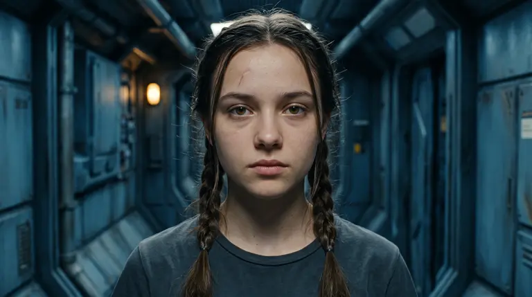 | 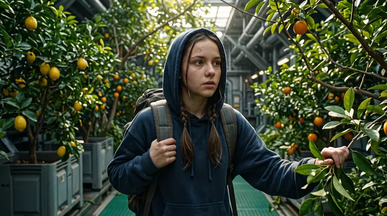 | 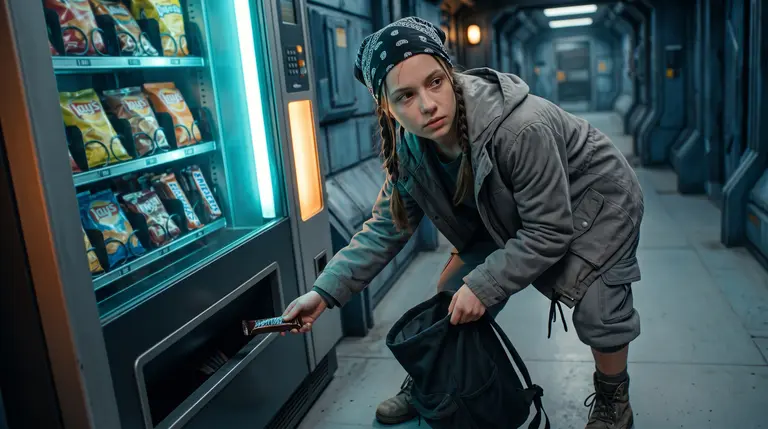 |
02Seedream 5 ProПортрет → 2 сценыМодель на fal.ai ↗ | 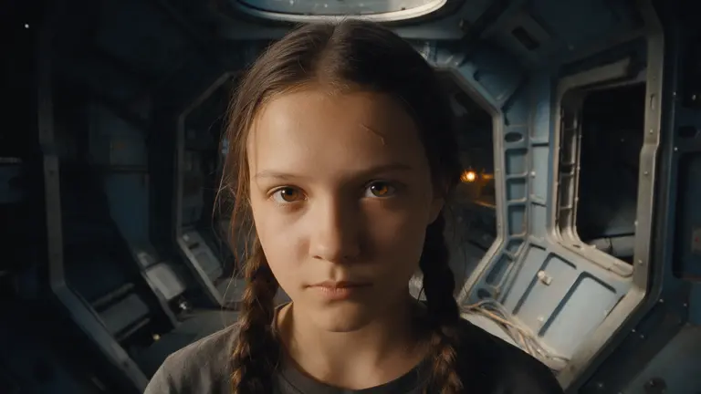 | 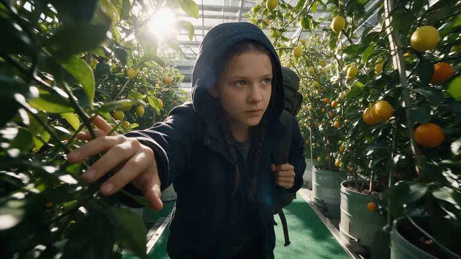 | 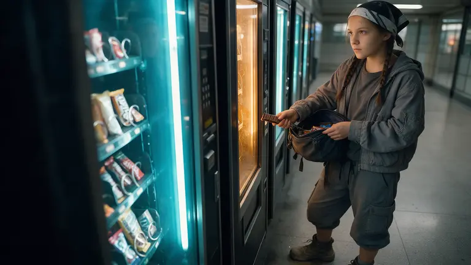 |
03GPT Image 2Портрет → 2 сценыМодель на fal.ai ↗ | 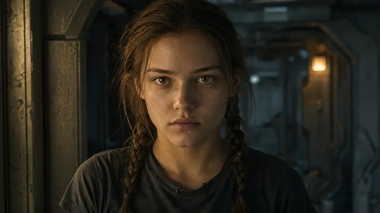 | 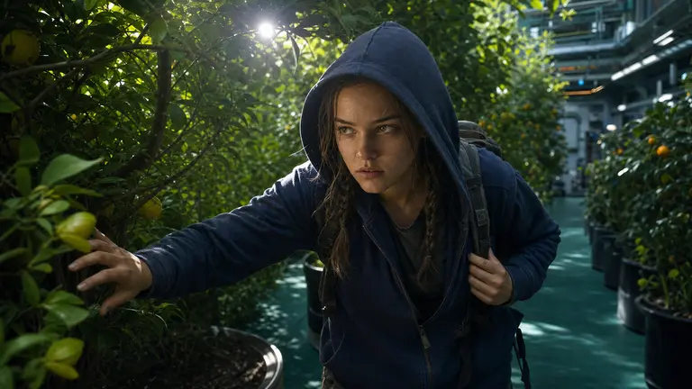 | 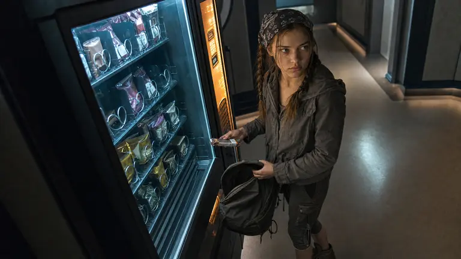 |
04GPT Image 2.5 SunburstПортрет → 2 сценыМодель на fal.ai ↗ | 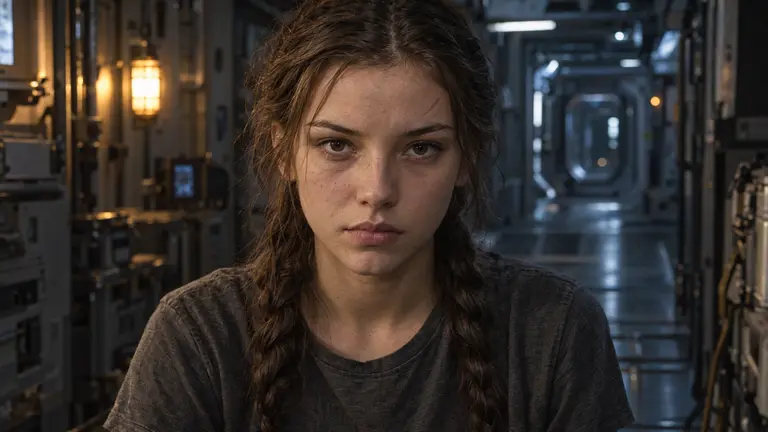 | 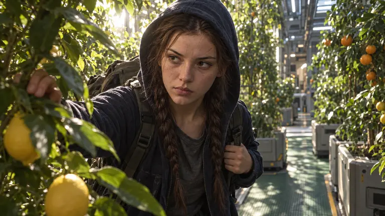 | 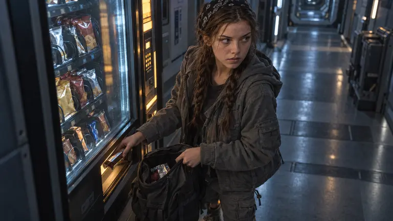 |
05FLUX.2 MaxПортрет → 2 сценыМодель на fal.ai ↗ | 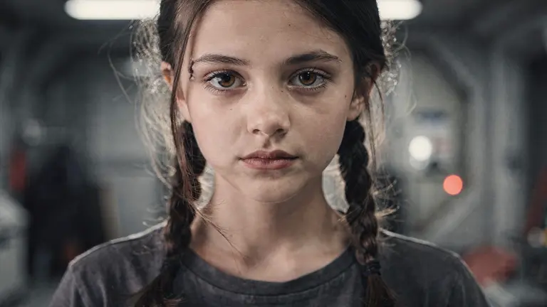 | 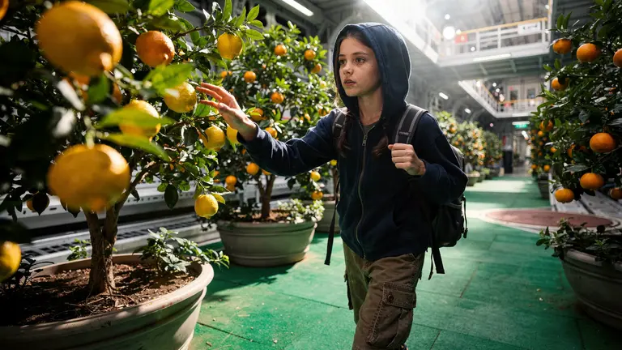 | 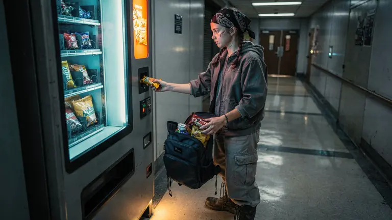 |


Две ситуации из романа
Сад, с. 61. Зелёная магистраль, лимоны и апельсины в кадках, рюкзак с едой. Тёмно-синяя пайта и капюшон — одежда этой вылазки, описанная на с. 52.
Автомат, с. 43–44. Таис собирает еду в открытый рюкзак. Здесь на ней серая куртка, бриджи ниже колен и чёрно-белая бандана.
Что сравниваем
У исходных портретов один и тот же текстовый запрос. Каждая производная получает только портрет своей модели. Смотрим на узнаваемость лица, действие, свет, руки и предметы.
Все результаты показаны без ретуши и повторного отбора. По одной попытке нельзя судить о модели в целом. Кадрирование и степень соблюдения промпта могут различаться.
Источники, параметры и оригиналы
Использован текст романа «ЖИВЫЕ». Камера, свет, точный жест и дизайн предметов — постановочные предложения. Старый шрам добавлен по запросу как вариант внешности, не как подтверждённый факт романа. Изображения не являются утверждённым дизайном проекта.
Формат задания — 16:9, около 2K. Оригинальные PNG сохранены без пересжатия и изменения размеров. Названия моделей соответствуют использованным маршрутам fal.ai. Все запросы, связи между исходными и производными кадрами и номера генераций — в файле генераций. Размеры и контрольные суммы — в списке оригиналов.